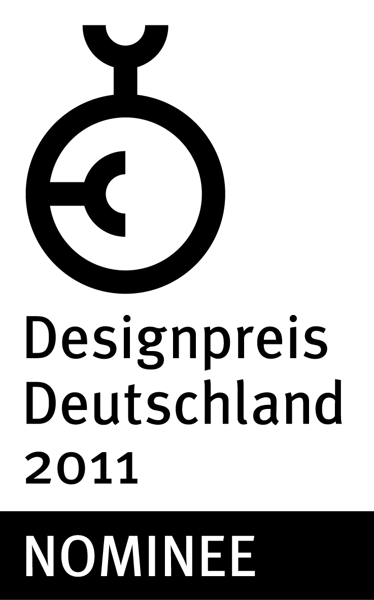
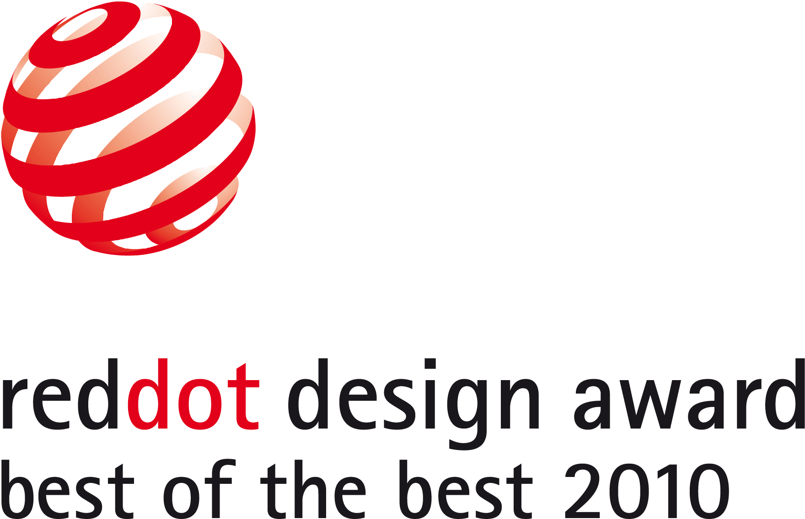
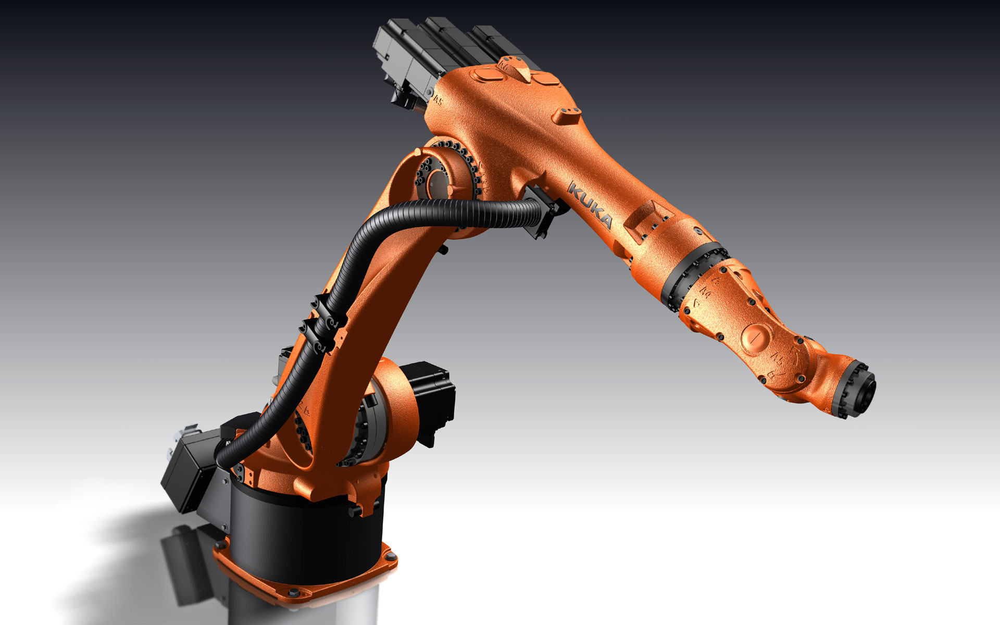
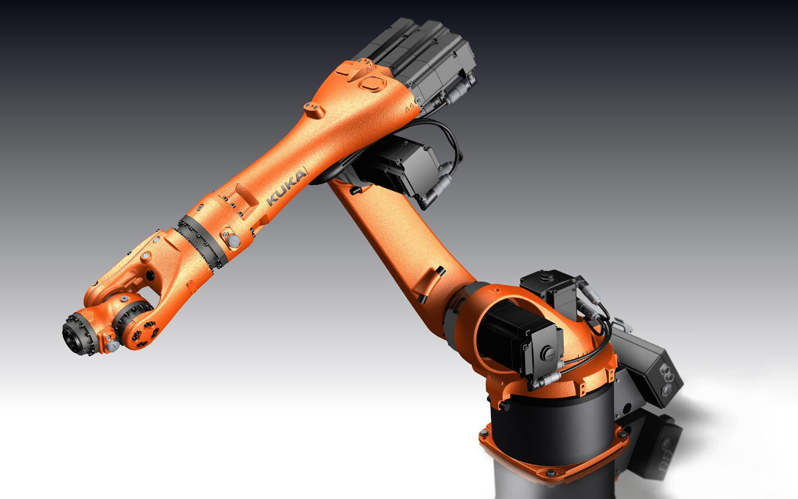
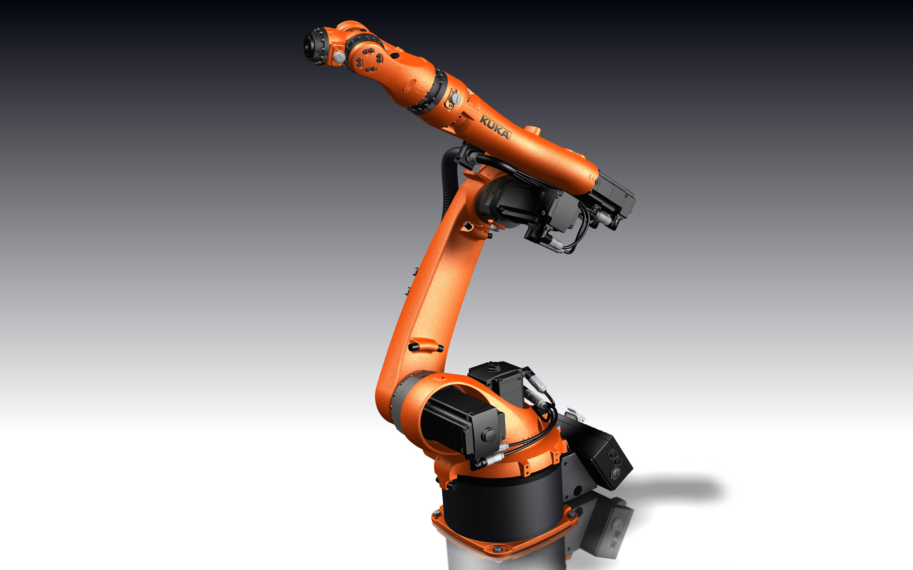
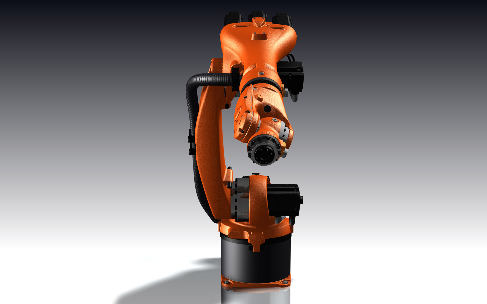

KUKA KR 5 arc
Small Size Robot
KUKA KR 5 arc
Kleinroboter
A versatile companion
When KUKA, the leading German company for robotics, developed the “Famulus” in 1973, they
invented the world’s first industrial robot with six electromagnetically driven axes, a highly versatile
robot for a wide range of applications. The KR 5 arc is one of a new generation of low-payload robots, and
in comparison to its “older brothers”, is rather small and lightweight, weighing in at only 127 kg.
It is immediately clear from the language of form and colour choice that it belongs to the KUKA family.
The most obvious characteristic of this robot, which is meant mainly for arc and laser welding as well
as the packaging and assembly of goods with a payload of up to 5 kg, is that it features an organic and
almost anatomic structural form.
The design is entirely without any external styling trim; instead each component is clearly discernible
in its technical function, reminiscent somewhat of human joints. The cast aluminium components, which
due to the detailing might seem somewhat “naked” at first, actually make these robots look as if they
are alive, making them fascinating to see at work. From a mechanical point of view, this kind of design
lends it high torsional and bending stiffness: this ensures its precise and reliable operation and also
has a positive effect on its mechanical force transmission.
The robot can be mounted on the ground or can be hung from the ceiling. Its reduced and well-defined
design suggests power and agility – contributing to a good workplace atmosphere.
References: red dot product design yearbook 2010
Ein bewegender Zeitgenosse
Im Jahr 1973 baute der deutsche Robotikpionier KUKA mit dem „Famulus“ den weltweit ersten Industrieroboter
mit sechs elektromechanisch angetriebenen Achsen. Er war sehr beweglich und konnte deshalb vielseitig
eingesetzt werden. Der KR 5 arc ist ein Kleinroboter neuester Generation und im Vergleich zu seinen
„großen Brüdern“ klein und mit 127 kg zudem sehr leicht.
In seiner Formensprache und Farbgebung wird rasch deutlich, dass er zur KUKA-Produktfamilie zählt. Das
auffälligste an diesem Roboter, der vor allem für Lichtschweißaufgaben, aber auch zum Montieren und
Verpacken von Gütern bis 5 kg eingesetzt wird, ist seine organische und anatomisch anmutende
Formensprache.
Seine Gestaltung verzichtet ganz auf die üblichen Verkleidungselemente, vielmehr sind die Funktionen der
einzelnen Elemente klar erkennbar – sie erinnern an menschliche Gelenke. Diese Detaillierung und auch
seine deshalb „nackt“ aussehenden Alugusselemente lassen diesen Roboter geradezu lebendig wirken, seine
fließenden Bewegungen faszinieren den Betrachter. Denn in mechanischer Hinsicht verleiht ihm diese Art
der Gestaltung eine hohe Biegefestigkeit und Torsionssteifigkeit: Er kann sehr präzise und zuverlässig
arbeiten, sein mechanischer Kraftfluss wurde begünstigt.
Dieser Roboter kann sowohl auf dem Boden stehend wie auch an der Decke montiert werden, mit seiner
reduzierten und klar definierten Gestaltung wirkt er kraftvoll und athletisch – und verbreitet dabei
eine sehr angenehme Arbeitsatmosphäre.
Quelle: red dot product design Jahrbuch 2010




Images © Selić Industriedesign